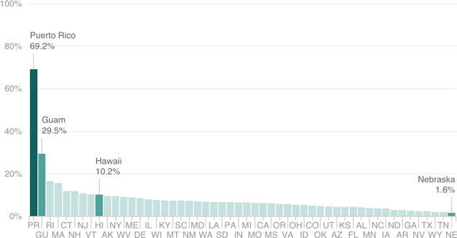

Puerto Rico’s Public Debt, Compared With Other States And Territories
Public debt as a share of GDP (most recent year available)

Notes:
Figures for Puerto Rico are for 2014. All others are for 2013.